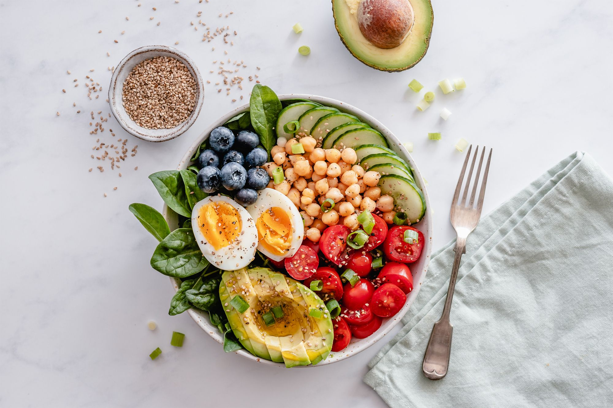

Lajmet më të Fundit
Këshilla për Shëndetin
Zbuloni 5 praktika të thjeshta për të përmirësuar stilin tuaj të jetës.
Lexo më shumë

Dieta e Shëndetshme
Si të organizoni një dietë që ndihmon shëndetin tuaj në mënyrë natyrale.
Lexo më shumëKëshilla të Dobishme
- Pini të paktën 8 gota ujë në ditë për të mbajtur trupin të hidratuar.
- Shmangni stresin duke ushtruar rregullisht joga ose meditimin.
- Konsultohuni me mjekun tuaj për kontrolle të rregullta shëndetësore.
Statistikat e Shëndetit
| # | Shërbimi | Përfitimi |
|---|---|---|
| 1 | Kontrolle Mjekësore | Zbuloni probleme shëndetësore në fazat e hershme. |
| 2 | Trajtimet Natyrale | Përmirësoni mirëqenien tuaj me metoda të sigurta. |
| 3 | Këshilla për Ushqim | Ndihmoni trupin tuaj të jetë energjik dhe i balancuar. |